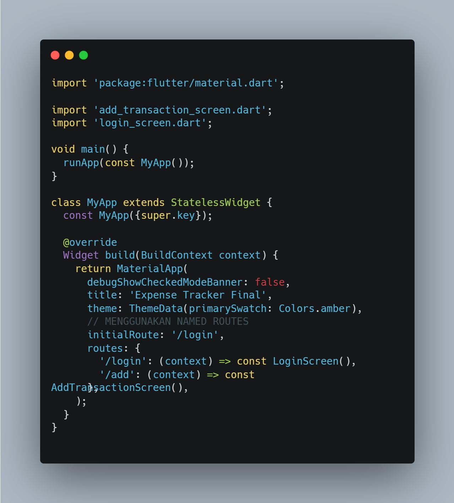
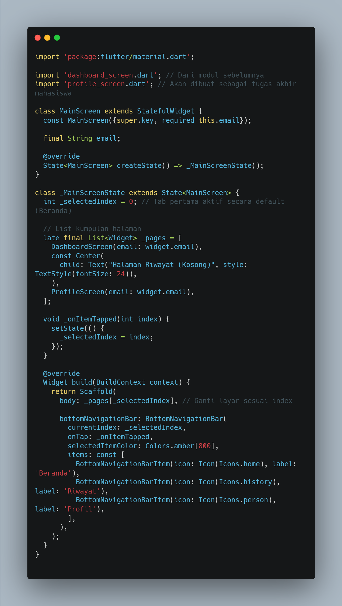
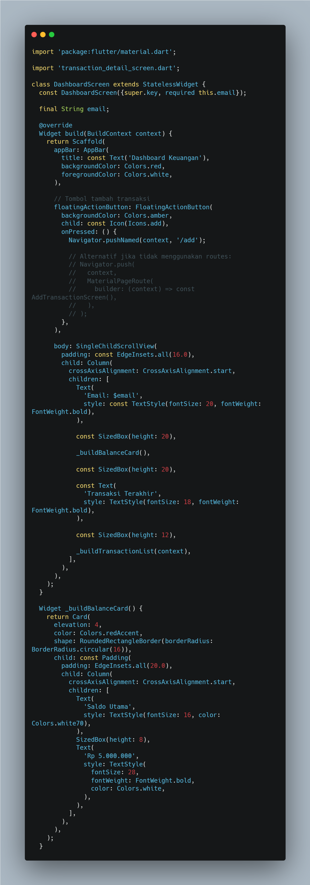
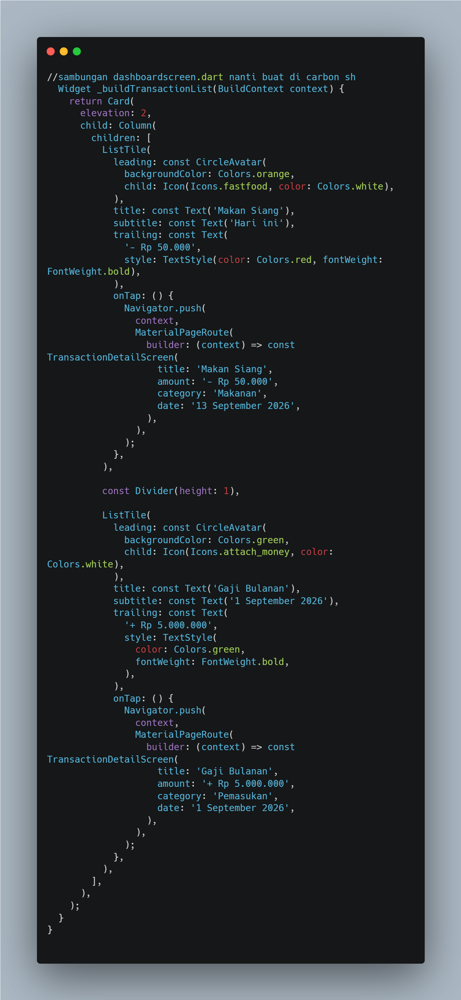
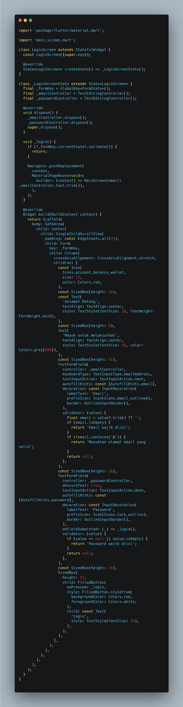
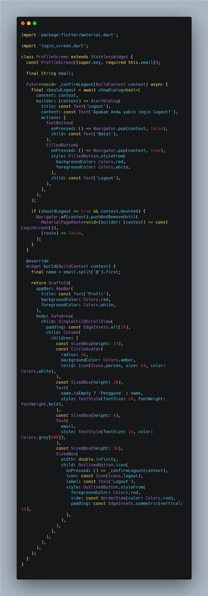

Laporan Praktikum Pemrograman Aplikasi Mobile
Integrasi Arsitektur Navigasi (Named Routes), Bottom Navigation Bar, & Manajemen State Aplikasi Finansial
Oleh:
AHMAD RAKA ALKINDI
NIM. 2411533017
Dosen Pengampu:
ARIFAN RAHMAN, S.Kom, M.Kom.
Mata Kuliah:
PEMROGRAMAN APLIKASI MOBILE
Fakultas Teknologi Informasi
Universitas Andalas
Padang
A. Pendahuluan
Praktikum modul akhir ini berfokus pada penggabungan seluruh komponen yang telah dipelajari dari pekan pertama hingga pekan kelima menjadi sebuah aplikasi finansial berbasis Flutter ("Expense Tracker Final") yang utuh dan terintegrasi. Fokus utama meliputi penerapan arsitektur navigasi terpusat menggunakan Named Routes, penyusunan menu bawah interaktif Bottom Navigation Bar, serta implementasi halaman autentikasi login dan halaman profil pengguna.
a. Named Routes
Peta rute string terpusat di MaterialApp (/login dan /add) untuk menyederhanakan perpindahan layar.
b. Bottom Navigation Bar
Navigasi tab bawah (Beranda, Riwayat, Profil) yang mengganti isi body pada satu Scaffold.
c. State Management
StatefulWidget dan setState() untuk mengelola indeks tab aktif pada MainScreen.
d. Autentikasi Pengguna
Login bervalidasi form yang meneruskan email ke dashboard dan profil, serta logout dengan dialog konfirmasi.
Tujuan
- Menerapkan
Named Routesuntuk manajemen navigasi aplikasi yang terstruktur. - Membangun menu navigasi bawah (
Bottom Navigation Bar) ala aplikasi finansial modern. - Mengintegrasikan halaman Beranda (dashboard), Riwayat, dan Profil ke dalam satu aplikasi yang kohesif.
- Menyelesaikan tugas akhir berupa halaman login bervalidasi dan halaman profil dengan fitur logout.
Alat yang digunakan: Flutter SDK, Code Editor (VS Code / Android Studio), Emulator / Device.
B. Hasil Praktikum
Bagian ini mendokumentasikan pekerjaan yang mengikuti petunjuk modul: konfigurasi rute, penampung tab, dan halaman dashboard beserta daftar transaksinya. Klik gambar kode untuk melihat ukuran penuh.
Konfigurasi Named Routes main.dart

Gambar 1: Kode program main.dartmain()menjalankanMyAppyang membangunMaterialAppbertemaprimarySwatch: Colors.amber.initialRoute: '/login'membuat layar pertama adalah halaman login.-
Map
routesmendaftarkan'/login'→LoginScreendan'/add'→AddTransactionScreen, sehingga cukup dipanggil denganNavigator.pushNamed(context, '/add').
Penampung Tab Utama main_screen.dart

Gambar 2: Kode program MainScreen & Bottom Navigation BarMainScreenadalahStatefulWidgetyang menerima parameteremaildari halaman login._selectedIndexmenyimpan tab aktif (default 0 = Beranda);_pagesberisiDashboardScreen, halaman Riwayat (sementara placeholder), danProfileScreen._onItemTapped()memanggilsetState()sehinggabody: _pages[_selectedIndex]berganti sesuai tab yang ditekan.BottomNavigationBarmemiliki tiga item (Beranda, Riwayat, Profil) denganselectedItemColor: Colors.amber[800].
Dashboard Keuangan dashboard_screen.dart

Gambar 3.1: DashboardScreen & kartu saldo
Gambar 3.2: Method _buildTransactionList()DashboardScreenmenerimaemaillalu menampilkannya di bagian atas, diikuti kartu saldo (_buildBalanceCard(), "Saldo Utama Rp 5.000.000") dan judul "Transaksi Terakhir".FloatingActionButtonmemanggilNavigator.pushNamed(context, '/add')untuk membuka form tambah transaksi lewat named route._buildTransactionList()menyusunCardberisiListTile(ikon, judul, tanggal, nominal berwarna merah untuk pengeluaran dan hijau untuk pemasukan).- Saat
onTap,Navigator.pushmembukaTransactionDetailScreendengan membawa data judul, nominal, kategori, dan tanggal.
Hasil eksekusi:
 Gambar 3.3: Tab Beranda
Gambar 3.3: Tab Beranda
 Gambar 3.4: Form Catat Transaksi (/add)
Gambar 3.4: Form Catat Transaksi (/add)
 Gambar 3.5: Dashboard setelah transaksi disimpan
Gambar 3.5: Dashboard setelah transaksi disimpan
C. Hasil Tugas
Tugas akhir terdiri dari halaman login bervalidasi dan halaman profil yang menampilkan data pengguna beserta fitur logout.
Tugas 1: Halaman Login login_screen.dart

Gambar 4: Kode program LoginScreenGlobalKey<FormState>dan duaTextEditingController(email, password) mengendalikan form; keduanya dibuang didispose()agar tidak terjadi kebocoran memori.- Validator email menolak input kosong dan input tanpa karakter
@; validator password menolak input kosong. -
_login()menjalankanvalidate(); jika lolos,Navigator.pushReplacementmembukaMainScreen(email: ...)sehingga pengguna tidak bisa kembali ke login dengan tombol back. - Kolom password memakai
obscureText: true, danonFieldSubmittedmemungkinkan login lewat tombol enter keyboard.
Hasil eksekusi:
 Gambar 4.1: Halaman login
Gambar 4.1: Halaman login
Tugas 2: Halaman Profil & Logout profile_screen.dart

Gambar 5: Kode program ProfileScreenProfileScreenmenerimaemail; nama pengguna diambil dari bagian sebelum@memakaiemail.split('@').first(bernilai "Pengguna" jika kosong).- Tampilan terdiri dari
CircleAvatar, nama, email, dan tombolOutlinedButton.icon"Logout". _confirmLogout()menampilkanAlertDialoglewatshowDialog<bool>dengan pilihan Batal / Logout.- Jika dikonfirmasi dan
context.mounted,pushAndRemoveUntilmembukaLoginScreendan menghapus seluruh tumpukan halaman sebelumnya.
Hasil eksekusi:
 Gambar 5.1: Tab Profil dengan dialog konfirmasi logout
Gambar 5.1: Tab Profil dengan dialog konfirmasi logout
D. Struktur & Alur Program
| Berkas | Jenis | Fungsi |
|---|---|---|
main.dart |
Praktikum | Titik masuk, tema, initialRoute, dan peta named routes. |
main_screen.dart |
Praktikum | Penampung tab + BottomNavigationBar, menyimpan indeks tab aktif. |
dashboard_screen.dart |
Praktikum | Tab Beranda: email, kartu saldo, daftar transaksi terakhir, tombol tambah. |
transaction_detail_screen.dart |
Praktikum | Menampilkan detail satu transaksi (judul, nominal, kategori, tanggal). |
add_transaction_screen.dart |
Praktikum | Form tambah transaksi, dibuka lewat rute /add. |
login_screen.dart |
Tugas | Form login bervalidasi, lalu berpindah ke MainScreen. |
profile_screen.dart |
Tugas | Data profil dan logout dengan dialog konfirmasi. |
Alur navigasi:
/login LoginScreen (validasi) MainScreen (Beranda / Riwayat / Profil) dari Beranda:
/add atau TransactionDetailScreen; dari Profil: logout kembali ke LoginScreen.
E. Video Demo Aplikasi
Video berikut menjelaskan alur kerja aplikasi, struktur kode, dan demonstrasi fitur secara langsung.
G. Kesimpulan
Kesimpulan dari rangkaian praktikum ini adalah saya berhasil mengintegrasikan modul pembelajaran mulai dari pengenalan widget dasar, perancangan antarmuka, hingga penerapan arsitektur navigasi menggunakan
Named Routes dan Bottom Navigation Bar. Aplikasi yang dibangun memiliki alur navigasi yang terstruktur: login bervalidasi, dashboard dengan saldo dan daftar transaksi, detail dan penambahan transaksi,
serta halaman profil dengan logout. Pengelolaan tab dilakukan secara reaktif dengan StatefulWidget. Halaman Riwayat masih berupa placeholder dan dapat dikembangkan pada tahap berikutnya.